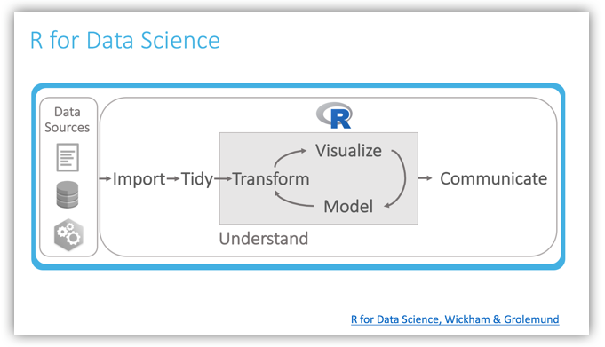
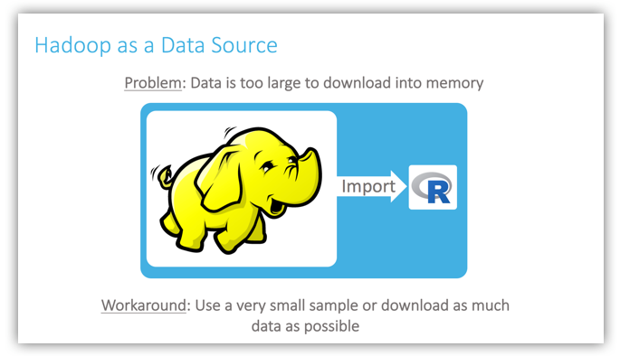
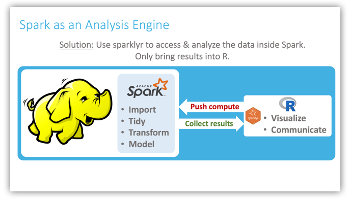
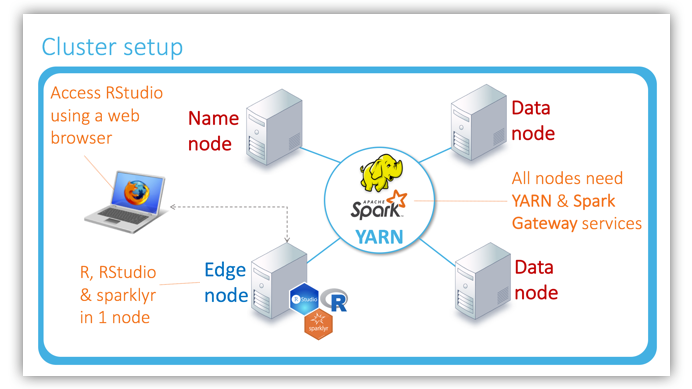
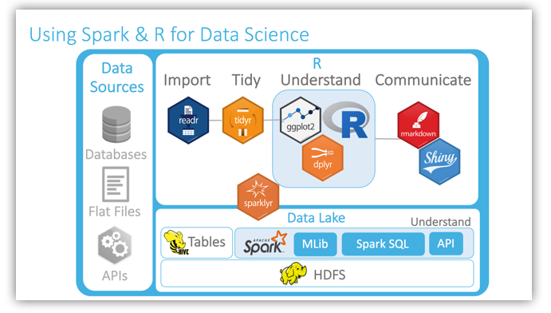

Data Lakes
Audience
This article explains how to take advantage of Apache Spark at organizations that have a Hadoop based Big Data Lake.
Introduction
We have noticed that the types of questions we field after a demo of sparklyr to our customers were more about high-level architecture than how the package works. To answer those questions, we put together a set of slides that illustrate and discuss important concepts, to help customers see where Spark, R, and sparklyr fit in a Big Data Platform implementation. In this article, we’ll review those slides and provide a narrative that will help you better envision how you can take advantage of our products.
R for Data Science
It is very important to preface the Use Case review with some background information about where RStudio focuses its efforts when developing packages and products. Many vendors offer R integration, but in most cases, what this means is that they will add a model built in R to their pipeline or interface, and pass new inputs to that model to generate outputs that can be used in the next step in the pipeline, or in a calculation for the interface.
In contrast, our focus is on the process that happens before that: the discipline that produces the model, meaning Data Science.

In their R for Data Science book, Hadley Wickham and Garrett Grolemund provide a great diagram that nicely illustrates the Data Science process:
We import data into memory with R
Clean and tidy the data
Dive into a cyclical process called understand, which helps us to get to know our data, and hopefully find the answer to the question we started with. This cycle typically involves making transformations to our tidied data, using the transformed data to fit models, and visualizing results.
Once we find an answer to our question, we then communicate the results.
Data Scientists like using R because it allows them to complete a Data Science project from beginning to end inside the R environment, and in memory.
Hadoop as a Data Source
What happens when the data that needs to be analyzed is very large, like the data sets found in a Hadoop cluster? It would be impossible to fit these in memory, so workarounds are normally used. Possible workarounds include using a comparatively minuscule data sample, or download as much data as possible. This becomes disruptive to Data Scientists because either the small sample may not be representative, or they have to wait a long time in every iteration of importing a lot of data, exploring a lot of data, and modeling a lot of data.

Spark as an Analysis Engine
We noticed that a very important mental leap to make is to see Spark not just as a gateway to Hadoop (or worse, as an additional data source), but as a computing engine. As such, it is an excellent vehicle to scale our analytics. Spark has many capabilities that makes it ideal for Data Science in a data lake, such as close integration with Hadoop and Hive, the ability to cache data into memory across multiple nodes, data transformers, and its Machine Learning libraries.
The approach, then, is to push as much compute to the cluster as possible, using R primarily as an interface to Spark for the Data Scientist, which will then collect as few results as possible back into R memory, mostly to visualize and communicate. As shown in the slide, the more import, tidy, transform and modeling work we can push to Spark, the faster we can analyze very large data sets.

Cluster Setup
Here is an illustration of how R, RStudio, and sparklyr can be added to the YARN managed cluster. The highlights are:
- R, RStudio, and
sparklyrneed to be installed on one node only, typically an edge node - The Data Scientist can access R, Spark, and the cluster via a web browser by navigating to the RStudio IDE inside the edge node

Considerations
There are some important considerations to keep in mind when combining your Data Lake and R for large scale analytics:
Spark’s Machine Learning libraries may not contain specific models that a Data Scientist needs. For those cases, workarounds would include using a
sparklyrextension such as H2O, or collecting a sample of the data into R memory for modeling.Spark does not have visualization functionality; currently, the best approach is to collect pre-calculated data into R for plotting. A good way to drastically reduce the number of rows being brought back into memory is to push as much computation as possible to Spark, and return just the results to be plotted. For example, the bins of a Histogram can be calculated in Spark, so that only the final bucket values would be returned to R for visualization.
A particular use case may require a different way of scaling analytics. We have published an article that provides a very good overview of the options that are available: R for Enterprise: How to Scale Your Analytics Using R
R for Data Science Toolchain with Spark
With sparklyr, the Data Scientist will be able to access the Data Lake’s data, and also gain an additional, very powerful understand layer via Spark. sparklyr, along with the RStudio IDE and the tidyverse packages, provides the Data Scientist with an excellent toolbox to analyze data, big and small.
